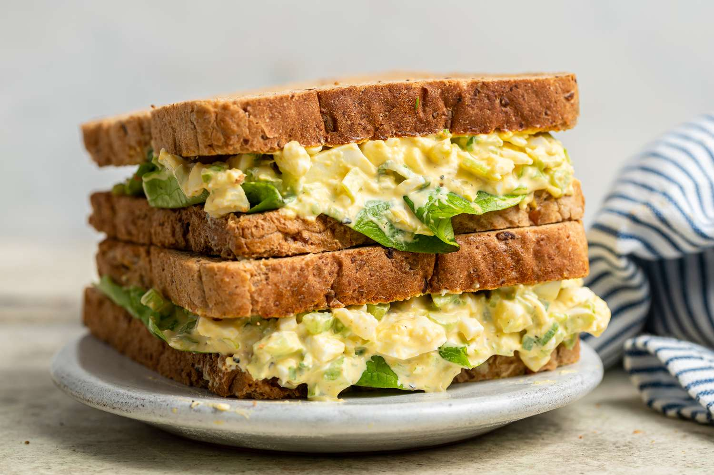

Egg Sandwich Recipe
Below is the picture of the Sandwich

Description
The sandwich, as we know it today, was popularized in 1762 by John Montagu, the 4th Earl of Sandwich, in England. He requested a meal of cold meat placed between two slices of bread so he could eat without interrupting his gambling. This simple yet practical idea quickly gained popularity among England's gentry and later spread globally. However, the concept of placing food between bread has ancient roots, with similar practices observed in Mediterranean and Jewish traditions. Over time, the sandwich evolved into a versatile dish with countless variations, from simple meat fillings to elaborate creations featuring diverse ingredients.
Ingredients
- 2-6 Boiled eggs
- 4-8 slices of bread
- 1-3 tablespoons mayonnaise
- 1 teaspoon mustard
- Salt and black pepper to taste
- Butter (optional, for spreading or toasting the bread)
Steps
- Boil the Eggs: Place eggs in a pot, cover with water, and boil for 8–10 minutes for hard-boiled eggs. Once cooked, cool them in ice water, peel, and chop into small pieces.
- Prepare the Egg Mixture: In a bowl, mix the chopped eggs with mayonnaise, mustard (optional), salt, and pepper. Add optional ingredients like chopped chives, parsley, or paprika for extra flavor.
- Toast the Bread (Optional): Lightly toast the bread slices if desired for a crisp texture.
- Assemble the Sandwich:
- Spread butter on one side of each bread slice (optional).
- Spoon the egg mixture onto one slice of bread.
- Add optional toppings like lettuce, tomato slices, or cheese.
- Place another slice of bread on top to complete the sandwich.
- Serve: Cut the sandwich in half or quarters and serve immediately.
ENJOY!